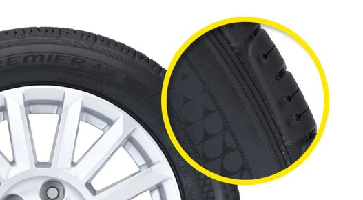
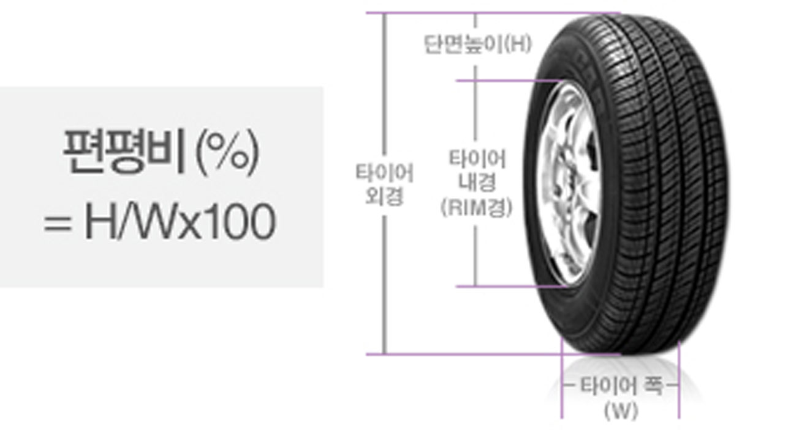
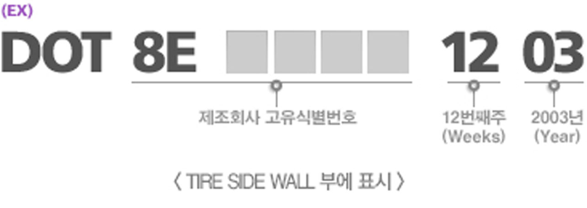

하중 지탱, 방향 전환 등 타이어에는 수많은 첨단 기능이 결집되어 있습니다.
정확한 교체시기와 관리방법을 알아보고 더욱 안정성 있게 운전을 해보아요
안전 주행을 위해 타이어의 공기압 관리법을 알아야 합니다.
차에 맞는 타이어를 선택해야만 본인의 차에 맞는 타이어를 착용할 수 있습니다.
타이어 구매 시 타이어의 규격을 반드시 확인해야 합니다. 또한 표기법을 확인하면 편리하게 구매 가능합니다.
타이어는 다양한 구성 요소의 고무층들이 연계되어 과학적인 구조로 제작됩니다.
타이어의 주요 역할
하중 지탱, 충격 흡수 및 완화, 엔진 구동, 방향 전환 및 유지 등 타이어에는 수많은 첨단 기능이 결집되어 있습니다.
하중 지탱
타이어는 수많은 부품과 철재로 이루어진 무거운 차체를 받쳐 안정적으로 주행할 수 있도록 합니다. 이를 위해 두꺼운 고무층인 트레드(Tread), 타이어의 골격을 이루는 카카스(Carcass) 등 견고한 구조로 이루어져 있으며, 하중을 견딜 수 있도록 적정 공기압을 유지하게 됩니다. 또한 정지 상태의 수직 하중 외에도 제동할 때나 움직일 때 변화하는 하중에도 대응할 수 있도록 고도의 기술력을 집약해 놓았습니다.
동력 전달
엔진에서 발생되는 자동차의 구동력과 브레이크의 제동력은 타이어를 통해 노면으로 전달됩니다. 노면와 닿는 부분을 뒤로 밀며 앞으로 나아가는 구동력, 진행방향과 반대되는 힘을 걸어 속도를 줄이는 제동력은 타이어의 성능이 크게 좌지우지 합니다. 이를 강화하기 위해 트레드 및 패턴을 최적화 할 수 있도록 연구하며, 더불어 내구성, 접지력, 배수성 등을 향상시킵니다.
완충 작용
타이어는 고무를 원료로 하여 기본적으로 탄성을 가지고 있으며, 스프링 형태의 서스펜션 시스템(suspension system)이 타이어와 차체를 연결합니다. 그래서 타이어는 자동차가 도로와 부딪히며 생기는 충격을 줄여주는 1차 완충 역할을 합니다. 더불어 타이어의 블록, 패턴 디자인, 공기압 등이 소음과 승차감을 좌우합니다. 공기압이 과다하면 신축성이 떨어져 승차감이 나빠지고 공기압이 부족하면 회전 저항이 커지고 열이 발생해 파손되기 쉬우므로 운전자가 주기적으로 점검해야 합니다.
방향 전환
타이어는 주행성능 전반에 영향을 미치는데, 그 중에서도 운전자가 핸들을 돌리면 수많은 조향 장치들을 거쳐 최종적으로 자동차의 진행 방향을 바꿔줍니다. 주행 방향을 전환하거나 다시 원래대로 유지시켜주는 타이어는 노면과 회전 힘 사이에서 복합적인 저항력을 받게 됩니다. 이때 타이어가 진행하려는 방향에 수직으로 작용하는 힘을 ‘코너링포스’라고 합니다. 자동차가 선회할 때 타이어가 지면을 얼마나 지지하고 저항에 견디며 부드럽게 방향을 전환할 수 있는지, 즉 ‘코너링 성능’이 어떠하냐에 따라 타이어의 성능을 판단하기도 합니다.
Other Guide
타이어 교체시기
View >타이어 공기압 확인법
View >적합한 타이어 선택요령
View >타이어 표기법
View >타이어 구조 및 명칭
View >타이어 교체시기
정확한 교체시기와 관리방법을 알아보고 더욱 안정성 있게 운전을 해보아요
교체시기 기준은?
타이어 수명이 정확히 얼마나 되는지는 알 수 없습니다. 타이어의 수명과 주행 거리는 디자인, 운전자의 습관, 기후, 노면 상태 및 타이어 관리 등에 따라 좌우됩니다. 하지만 1- 5년 후 점검은 필수입니다. 사용 기간이 5년 이상을 경과한 후에는 매년 1회 이상 전문 기술자에게 타이어에 대한 철저한 검사를 받아야 합니다.
지금 타이어 교체가 필요할까요?
다음의 경우에는 타이어를 교환할 것을 권장합니다. 권장 트레드 깊이 레벨 이상으로 트레드가 마모된 경우 측벽이 손상된 경우, 트레드의 홈 직경이 6mm보다 큰 경우, 비드가 손상되었거나 변경된 경우 (비드는 휠에 장착된 타이어 가장자리를 말함)
Other Guide
타이어의 주요 역할
View >타이어 공기압 확인법
View >적합한 타이어 선택요령
View >타이어 표기법
View >타이어 구조 및 명칭
View >타이어 공기압 확인법
안전 주행을 위해 타이어의 공기압 관리법을 알아야 합니다.
차량 공기압
타이어의 공기압 중 일부는 자연적으로 손실됩니다(일반적으로 매월 1psi(0.076bar)).
공기압 손실은 다음 원인으로 인한 다른 공기 누출로 가속화될 수도 있습니다. 공기압 부족으로 사용하면 타이어에 열이 많이 발생하여 고무와 코드가 분리되고 코드의 절단 및 타이어가 파열되며 타이어 가장자리가 빨리 닳아 수명이 짧아집니다. 공기압 과다로 사용하면 타이어가 항상 긴장 상태를 유지하여 외부 충격 시 파열 및 절상되기 쉽고 브레이크를 밟았을 때 미끄러지기 쉬우며 타이어 가운데 부분만 빨리 닳아 수명이 짧아질 수 있습니다.
마모
공기압이 20% 부족한 타이어는 주행 거리가 20% 짧아질 수 있습니다. 이는 잠재 주행 거리 25,000mile(40,000km)에서 5,000mile(8,000km)가 손실됨을 의미합니다.
관리법
돌발적인 펑크
밸브: 타이어를 교환할 때마다 교환해야 합니다.
밸브 캡: 기밀 상태를 보장하는 데 반드시 필요합니다.
휠: 타이어를 장착할 때마다 세척해야 합니다.
차량 또는 타이어 제조업체의 권고, 특히 사용 약관(하중/속도 등)을 따르십시오.
타이어가 식었을 때 공기압을 점검하십시오(지난 2시간 동안 사용한 적이 없거나 저속으로 2mile(3km) 미만을 주행한 타이어).
점검할 때 타이어 온도가 높으면 차량 제조업체에서 권장하는 타이어에 4~5psi(0.3bar)를 추가하십시오. 타이어가 식었을 때 공기압을 다시 점검하십시오.
과열된 타이어에서는 절대로 공기를 빼지 마십시오.
타이어에 질소가 주입했더라도 공기압과 전체적인 타이어 상태를 여전히 자주 점검해야 합니다.
Other Guide
타이어의 주요 역할
View >타이어 교체시기
View >적합한 타이어 선택요령
View >타이어 표기법
View >타이어 구조 및 명칭
View >적합한 타이어 선택요령
차에 맞는 타이어를 선택해야만 본인의 차에 맞는 타이어를 착용할 수 있습니다.
1. 안전
대부분의 타이어가 일반적인 상황에서는 충분한 성능을 발휘하지만, 어려운 상황에 처했을 때에는 차이가 드러납니다. 주행 시 접할 수 있는 최악의 기상 또는 노면 유형에서 우수한 성능을 발휘할 수 있는 타이어를 선택하세요. TIRE CODI는 젖은 노면에서 똑같은 타이어의 다른 프리미엄 타이어 브랜드보다 제동 거리가 6미터 더 짧습니다. 이는 차량 길이의 거의 1.5배에 달합니다.
2. 가치
지금 당장은 비용을 절약해도, 나중에는 더 큰 지출로 이어질 수 있습니다. 그 이유는 수명이 더 길고 연료 절감을 지원하는 타이어를 장착하면 오랜 시간 주행했을 때 비용이 절감되기 때문입니다. 지금 더 효율적인 타이어를 구입한다면 더 오랜 기간 동안 타이어를 사용할 수 있습니다.
2. 가치
지금 당장은 비용을 절약해도, 나중에는 더 큰 지출로 이어질 수 있습니다. 그 이유는 수명이 더 길고 연료 절감을 지원하는 타이어를 장착하면 오랜 시간 주행했을 때 비용이 절감되기 때문입니다. 지금 더 효율적인 타이어를 구입한다면 더 오랜 기간 동안 타이어를 사용할 수 있습니다.
3. 나에게 맞는 타이어
신발과 마찬가지로, 타이어는 운전자에게 꼭 맞아야 합니다. 차에 탑승해 보세요. 서로 다른 타이어 세트를 장착해 보세요. 전혀 다른 주행감을 느끼실 수 있습니다. 멋진 코너링이 가능한 정밀한 핸들링을 원하시나요? 아니면, 편안한 주행을 원하시나요? 주행 스타일을 고려하여 타이어를 선택하세요.
Other Guide
타이어의 주요 역할
View >타이어 교체시기
View >타이어 공기압 확인법
View >타이어 표기법
View >타이어 구조 및 명칭
View >적합한 타이어 선택요령
차에 맞는 타이어를 선택해야만 본인의 차에 맞는 타이어를 착용할 수 있습니다.
ISO 호칭(국제 표준조직)
ISO 호칭(국제 표준조직)
전례적인 호칭
편평비(시리즈)의 이해
타이어 시리즈는 편평비라 하며 이는 타이어 단면의 폭에 대한 높이의 비율을 뜻함.
제조일의 식별
DOT(Department Of Transportation) 미국 수출용 타이어에는 FMVSS(Federal Vehicle Safety Standard) 규정에 의해 DOT No.를 타이어 옆면에 표시함에 따라 각인 번호로 식별이 가능함.
Other Guide
타이어의 주요 역할
View >타이어 교체시기
View >타이어 공기압 확인법
View >적합한 타이어 선택요령
View >타이어 구조 및 명칭
View >타이어 구조 및 명칭
타이어는 다양한 구성 요소의 고무층들이 연계되어 과학적인 구조로 제작됩니다.
1. 트레드(Tread)
노면과 접촉하는 부분을 말하며 두꺼운 고무층으로 되어 있어 노면 등으로부터 충격, 외상으로부터 내부의 CARCASS를 보호함과 동시에 마모 수명 연장의 역할도 합니다. 표면의 TREAD PATTREN으로 제동력, 구동력, 선회력, 배수성 등의 기능을 부여합니다.
2. 사이드월(Sidewall)
타이어의 측면 부분으로서(숄더와 비드부 사이) 주행 중 지속적으로 반복되는 수축, 팽창작용(굴신운동)을 견디어 내고 습기나 마찰로부터 카카스 코드를 보호하는 역할을 합니다. 표면에는 상표명, 사이즈, 제조번호 안전표시, 마모한계 등의 정보를 표시하고 있습니다.
3. 카카스(Carcass)
카카스는 타이어의 골격입니다. 이것은 강한 공기압을 지탱하기에 충분히 강해야 하며, 하중 변화와 충격을 흡수하기에도 유연성이 있어야 합니다. 카카스는 고무로 감싸진 코드 층으로 구성되어 있습니다.
4. 벨트(Belt)
래디얼 타이어의 트레드와 카카스 사이에 원주 방향에 들어가는 강력한 보강 층으로서 브레이크와 같은 역할을 하며, 특히 카카스를 강하게 잡아주어 트레드 부의 탄성을 높이고 조종성, 안정성을 갖게 합니다.
5. 비드(Bead)
타이어와 림과 결합하는 부분으로 중심에는 강선으로 만든 링 상태의 비드 와이어가 있고 카카스 끝에 감싸고 있습니다. 높은 압력의 공기를 넣은 타이어를 림과 고정시키는 역할을 하며, 특히 튜브레스 타이어의 비드부는 공기의 기밀성 유지에도 큰 역할을 합니다.
6. 이너 라이너 (Inner liner)
튜브타입이 아닌 타이어의 고무층은 공기의 방출을 막기 위해서 특별히 만들어집니다. 튜브타입이 아닌 타이어의 이너 라이너는 튜브 타입 타이어의 이너튜브와 같은 역할을 합니다.
Other Guide
타이어의 주요 역할
View >타이어 교체시기
View >타이어 공기압 확인법
View >적합한 타이어 선택요령
View >타이어 표기법
View >